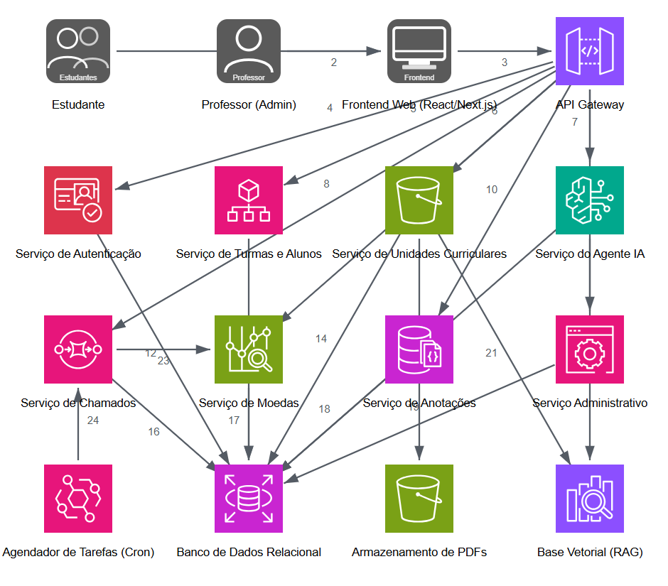

Agente contextualizado por plano de aula, PDI automatizado por aluno e aprendizado colaborativo com chamados e recompensas validadas pelo professor.
Estudantes de cursos técnicos e superiores travam em exercícios sem orientação personalizada. Professores não têm dados sobre o progresso real de cada aluno. A plataforma resolve os dois lados com IA, PDI contínuo e colaboração incentivada.

Arquitetura AWS · us-east-1 · 16 serviços · ícones oficiais AWS Architecture Icons
Bedrock + Guardrails — LLM na AWS, bloqueio nativo de código pronto.
OpenSearch Serverless — índice vetorial que escala com o volume de PDFs.
Lambda + Drizzle ORM — custo estritamente por uso; zero em feriados/madrugada.
RDS PostgreSQL — JSONB para histórico de chat, RLS para isolamento por turma.
EventBridge Scheduler — cron serverless para devolver chamados expirados (4 h).
OpenAI API — dados saem da AWS; sem Guardrails nativos; custo imprevisível.
Pinecone / Weaviate — adiciona latência e um terceiro no fluxo dos alunos.
EC2 + Express.js — instância 24/7; custo fixo e maior overhead operacional.
MongoDB Atlas — custo fora da AWS; JSONB no PostgreSQL já cobre o cenário.
Worker ECS com cron — container ativo; EventBridge já é nativo e sem custo fixo.